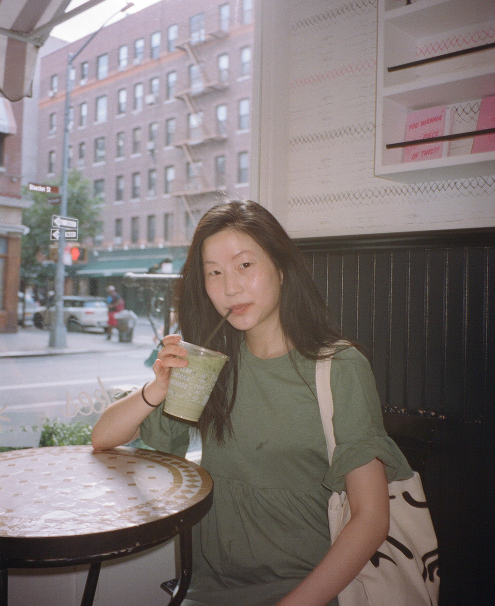

Home |
Photoshop |
Illustrator |
Animate |
InDesign |
Contact |

☆☆☆
Hello! This website was built as the final project for VMD 105. It showcases work I have done throughout the semester of Fall 2018. I took this class because I believed it would be invaluable towards my career aspiration as a visual and graphic designer. I hope to work across all creative fields: music, film, fashion, art, books, culture, etc. My dream is to open up my own studio.